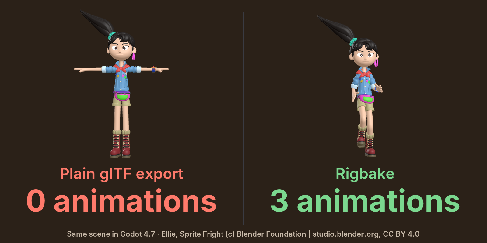
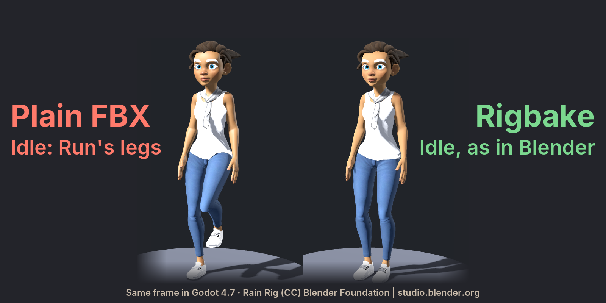
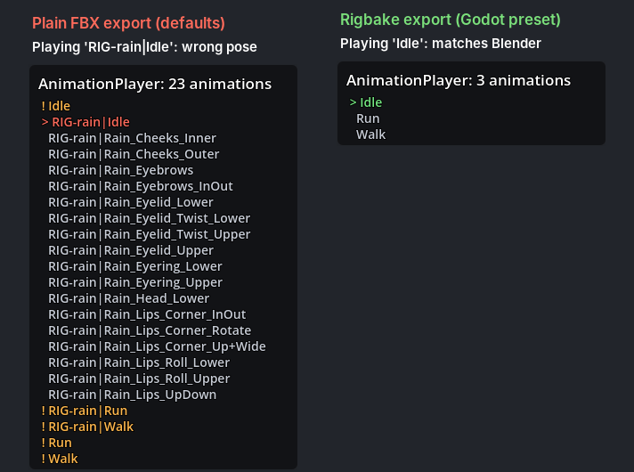

Rigbake for Blender

Control rig or NLA clips? Blender's default export can come out empty or with wrong, duplicated takes. Rigbake exports one clean, correctly named clip per action.
$19, one-time, source included (GPL-3.0-or-later). Tested on Blender 4.2 LTS, 4.5 and 5.0.
Engines: presets for Godot (checked in Godot 4.7), Unity and Unreal (not yet opened in Unity or Unreal).
Polar checkout · download by email · 14-day refund · no license check · details
Above: same .blend, Godot 4.7. Blender's default glTF export has 0 animations; Rigbake's has Idle, Run and Walk, every deform bone within 0.00001 m.
How this image was made
The character is Blender Studio's Ellie (CC BY 4.0). Her production rig is the control rig: it holds the Idle, Walk and Run keys on its NLA. A separate deform rig made of her 312 deform bones follows it through Copy Transforms. Both files come from the same .blend in Blender 4.2. Left: File > Export > glTF 2.0 with its defaults (deform rig and meshes selected); the file has no animation, so she stands in her bind pose. The default FBX export also has 0. Right: Rigbake 1.2.5 with its Godot preset, shown 0.46 s into Run; each of the 312 deform bones is within 0.00001 m of the live rig at the frames we checked. Both sides use the same flat colours, because her procedural shaders don't export to glTF. Her teeth and fanny-pack zipper are parented to bones on both sides, because the Surface Deform they use doesn't export.


- Validate Rig for Export checks the rig. Your rig and its actions are not changed.
- Export Game-Ready bakes each clip from the rest pose into plain keys and writes one clean clip per action, as glTF (Godot) or FBX (Unity, Unreal).
What it does
- Export Game-Ready. Bakes every bone constraint and driver into plain keys, one new action per clip, from the rest pose, and exports through Blender's own glTF and FBX exporters with documented presets for Godot, Unity, and Unreal, editable and saved with your file. Before you click, the panel shows the file and the clips; after, each clip with its frame range and every warning. Meshes parented to a bone, such as a sword on a hand bone, go with the character.
- One clip per action. The active action and every action on the NLA each become a clip named after the action, also from a control rig, which Rigbake detects. Select the deform rig or its mesh, not the control rig; if both rigs are selected (Select All), Rigbake leaves the control rig out of the file and says so. An action that is neither active nor on the NLA is named in the panel, with a one-click Add to NLA.
- Validate Rig for Export. What will break on the way to the engine, most damaging first, each with a one-line fix and a Select button; Apply Scale and Limit Weights in one click (Limit Weights names any bone it leaves without weights; Ctrl+Z undoes it). What the export handles or what is fine as it is are notes, not issues.
- Your actions and edits are kept. Originals are never modified; a baked action you clean up by hand is kept by the next export.
In Blender, for real
Every image below is a capture from a real Blender 4.2 LTS window with Rigbake 1.2.4 installed, then re-captured on 1.2.5, where the panel and the dialog are pixel-identical, shown at its real size (the dialog a little smaller, to fit this column), or a Godot 4.7 render of its files: not a mockup. The character is Rain, the Blender Studio's free production rig (2166 bones, 2788 bone constraints), with an Idle, a Walk and a Run clip, each on its own unmuted NLA track (as after Push Down), and her legs in IK. Each image links to the full Blender window.


![The Validate Rig for Export dialog on Rain: '7 issues, 2 notes in RIG-rain'; meshes with more than four bone weights per vertex with Limit Weights and Select buttons, meshes whose modifiers stay unapplied to keep shape keys, two meshes whose Mask modifiers then hide nothing in the engine, vertex groups with no weights or no matching bone, deform bones without weights, each with its fix and a Select button in one column; then a note that her shoes keep their shape keys over an unapplied Subdivision, fine for most games, and one more note in the full report; Close and Open Full Report](img/character-02-validate-popup.png)


Character: Rain Rig (CC) Blender Foundation | studio.blender.org, used under CC BY 4.0. We added the animation clips and simplified two eye materials for the game-engine export. Rain is not included with Rigbake. Rain has no separate control rig; the control-rig case is the Ellie image at the top of this page and the first row of "How we tested" below.
Details
- Buying: secure checkout by Polar. The download arrives by email right after payment; the zip includes the full source. Polar also emails a license key; Rigbake doesn't check it (no license check, no network access). If it doesn't work as described on your rig and we can't fix it, email us within 14 days of purchase for a full refund (terms). Questions first? support@ochrestack.com.
- Tested on Blender 4.2 LTS, 4.5 and 5.0; requires Blender 4.2 or newer. Installed as an extension from a zip. Verified in a real Blender 4.2 LTS window and in Godot 4.7. The Unity preset's FBX was checked through Godot's FBX importer. The Unreal preset has not been checked in Unreal Engine. Neither has been opened in Unity or Unreal.
- GPL-3.0-or-later. Full source code included with your purchase.
- No telemetry, no analytics, no network calls of any kind.
- Support: support@ochrestack.com. Bugs and feature requests welcome at the same address.
Documentation
The full manual (README.md) and a one-page quick start are inside the zip: open the zip to read them, but install the zip itself, as it is. The quick start is also online: Rigbake quick start.
Install
- Download
rigbake-1.2.5.zip. Install the zip itself; do not unzip it first. - In Blender (4.2 or newer; tested on 4.2 LTS, 4.5 and 5.0), open Edit > Preferences > Get Extensions.
- Open the drop-down menu (⌄) at the top right, choose Install from Disk... and pick the zip.
- Press N in the 3D Viewport and open the Rigbake tab.
If Get Extensions asks about internet access, Continue Offline is fine: Rigbake needs none. In Godot, set Animation > FPS to your Blender frame rate (Importing into Godot).
Words used on this page
- NLA: Blender's Nonlinear Animation editor, where an armature's clips sit side by side. Stashing an action puts it there as a muted track; Push Down puts it on an unmuted track.
- Take: one named animation inside an FBX file. Godot, Unity and Unreal list one animation per take.
- Control rig: a second armature that the animator keys; the exported deform rig, the one that bends the mesh, follows it through constraints.
Known limits
- Only bone motion is baked. Shape keys and their animation are exported as they are (Godot preset), or dropped with a warning (FBX presets, when the mesh has other modifiers).
- Motion keyed on the armature object itself is not exported; the validator and the export summary say so on every export. Blender's own FBX export keeps it, so for such a rig plain FBX does better. Put it on a root bone.
- The default exports the active action and every action on the NLA. Other actions of the rig are named in the panel, not exported, until you add them to the NLA.
- Keys are baked on whole frames. One control rig per deform rig. One file per export.
- Blender 4.5's own FBX importer misreads multi-take files; exports from Rigbake are correct, but re-importing them into 4.5 for checking is not reliable. Use 4.2 or 5.0 to verify, or your engine.
How we tested
| Scenario | Plain Blender export | Rigbake |
|---|---|---|
| Deform rig driven by a separate control rig, exported alone | 0 animations (glTF and FBX) | One clip per action, exact |
| Two clips on unmuted NLA tracks (for example after Push Down), IK target keyed in one, plain FBX | 4 takes for 2 clips, two of them wrong by 0.60 m / 0.82 rad | 2 takes, exact |
| Single rig with IK, Copy Rotation, and a driver, one action in the file, nothing on the NLA | Correct already | Correct; validator and presets are the value |
Why the take counts differ. Blender's default FBX export (All Actions and NLA Strips both on) writes each clip on an unmuted NLA track twice, once under the track's name and once as Rig|Clip, and adds every other action in the file that fits the rig. Tracks are unmuted after Push Down, for example. Our minimal test rig has two unmuted tracks and no other actions: 4 takes for 2 clips. Rain's three clips are on unmuted tracks and her file adds 17 face-rig pose actions: 23 takes for 3 clips. Ellie's three are on unmuted tracks and her file adds 16 rig pose actions, a camera pose library and a shader action: 24 takes for 3 clips. Stashed clips are different: Stash puts a clip on a muted track, which the FBX exporter skips, so each stashed clip is written once, as Rig|Clip. It can still be wrong: in our checks with Blender 4.2.23, a stashed Attack clip came out 0.56 m off. Rigbake writes one take per clip, named after the action, in each case.
We build each rig in code, export it with Blender's defaults and with Rigbake, re-import the file into Blender, and compare every deform bone with the live rig. Exact in the table means every bone within 1e-5 m of the live rig, on these cases and on three more buyer-style rigs (the tests fail above 1 mm or 0.001 rad). The measurements come from our automated test suite, which runs in full on Blender 4.2 and 5.0; on 4.5 its FBX re-import checks are skipped, because 4.5's own FBX importer misreads multi-take files.
How exact in Godot. The exported files are exact. Godot's default import re-samples each clip at its Animation > FPS setting, and its import Optimizer can thin keys: on fast motion our every-frame check measured up to 13 cm. With Animation > FPS set to the Blender frame rate and the AnimationPlayer's Optimizer turned off, every bone matched Blender within 0.0002 m in our check. The quick start shows both settings.